▲ 금산사 미륵전(국보 제62호). 2019년 8월 30일 촬영(위키미디어 파일 정보). 사진=Ahl0051(위키미디어 커먼즈, CC BY-SA 4.0)
"금산사는 새벽 6시부터 열려 있다는데, 입장료는 얼마일까?" 한국관광공사 TourAPI에는 전북 김제 금산사가 하절기 06:00~19:00, 동절기 06:00~18:00에 연중무휴로 올라 있다. 입장료는 2023년 5월 4일부터 문화유산 관람료 면제 대상 65개 사찰에 금산사가 포함돼 받지 않는 것으로 확인된다(정책브리핑·언론 보도). 다만 주차요금은 공식 근거를 찾지 못했고, 김제시 문화관광 누리집의 금산사 페이지에 실린 요금표는 제목이 '아리랑문학마을 이용안내 표'로 어긋나 금산사 요금이라고 보기 어렵다. 이 글은 금산사 누리집, 김제시·완주군 문화관광, 한국관광공사 TourAPI, 정책브리핑을 2026년 10월 10일에 직접 열어 확인한 값만 정리했다. 확인하지 못한 항목은 "확인하지 못했다"고 적었고, 가을 단풍과 산불철 입산통제도 공식 날짜가 없는 부분은 날짜를 쓰지 않았다.
💡 먼저 결론
금산사 입장료(문화유산 관람료)는 2023년 5월 4일부터 면제다. 정책브리핑 현장 기고문은 면제 전 성인 3,000원·어린이 1,000원이던 금산사 매표소가 '불교문화유산 안내소'로 바뀌었다고 전한다. 템플스테이는 금산사 누리집 기준 자율 휴식형 성인 8만 원, 주말 체험형 성인 10만 원이다. 이번 달 일정으로는 10월 17일(토) 개산대재와 10월 24일(토)부터의 화엄산림이 있다. 반면 주차요금과 모악산 단풍 절정 날짜, 2026년 가을철 입산통제 시작일은 공식 자료에서 확인하지 못했다. 금산사 누리집 바로가기
1. 한눈에 보기 — 확인한 것과 확인하지 못한 것
금산사(김제시 금산면 모악15길 1)는 모악산 서쪽 자락에 있는 대한불교조계종 제17교구 본사다. 같은 산을 완주군과 전주시도 끼고 있어 공식 안내가 김제시·완주군·금산사로 나뉘어 있고, 값이 서로 다른 곳도 있다. 아래 표는 항목별 근거와 상태를 구분한 것이다.
| 항목 | 확인된 값 | 출처·상태 |
|---|---|---|
| 금산사 개방 시간 | 하절기 06:00~19:00, 동절기 06:00~18:00. 하절기·동절기 구분월은 확인 못 함 | TourAPI(수정일 2026-09-21) |
| 금산사 휴무 | 연중무휴(TourAPI) | TourAPI. 아래 '도립공원' 표기와 다름 |
| 금산사 입장료 | 무료(문화유산 관람료 면제, 2023-05-04~). 면제 전에는 성인 3,000원·어린이 1,000원 | 정책브리핑 정책뉴스(2023-05-11)·서울신문(2023-05-04). 2026년 재징수 공지는 금산사 누리집에서 확인하지 못함 |
| 주차 | 가능(TourAPI). 요금은 확인하지 못했다 | 김제시 금산사 페이지의 요금표(경차 3,000원·승용·승합 5,000원)는 제목이 '아리랑문학마을'이라 금산사 요금으로 쓰지 않음 |
| 모악산도립공원 | 3~10월 09:00~18:00, 11~2월 09:00~17:00, 월요일·1월 1일 휴관 | TourAPI·김제시 표기. 시설 단위인지 산 전체인지는 확인 못 함 |
| 템플스테이 | 자율 휴식형 성인 8만 원, 주말 체험형 성인 10만 원 | 금산사 누리집 '템플스테이' |
| 10월 행사 | 개산대재 10월 17일(토) 10시(대적광전 앞마당, 당일 차량 운행). 화엄산림 10월 24일부터 매주 토요일 5회(10~12시, 주차비 무료). 점찰챌린지(10월 3~4일)는 종료 | 금산사 누리집 공지(이미지 공지 판독)·첫 화면 |
| 단풍 절정 | 산림청 2026 단풍나무류 예측지도에 모악산이 없어 날짜를 쓰지 않는다(전북은 내장산·변산반도 11월 4일) | 산림청 보도자료(2026-09-22) 지도 직접 확인 |
| 2026년 입산통제 시작일 | 공식 공고를 확인하지 못했다 | - |
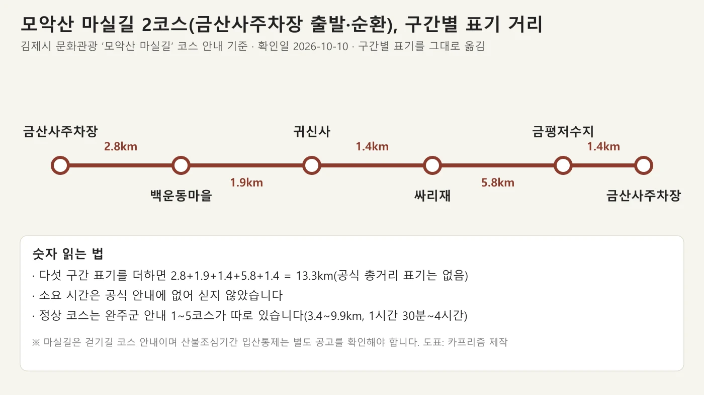
▲ 모악산 마실길 2코스 구간별 표기 거리(김제시 문화관광 기준, 확인일 2026-10-10). 사진=카프리즘 제작
2. 금산사 — 개방 시간·주차·입장료
금산사 누리집은 "금산사는 백제 법왕 원년(599)에 창건"되었다고 소개하고, 766년 진표율사가 미륵장육존상을 세우고 미륵전을 지었다고 적는다. 김제시 문화관광 누리집은 "600년(백제 법왕 1)에 세운 것이라 하나 확실하지는 않다"고 설명해 창건 연도 표기가 599년과 600년으로 나뉜다. 한국민족문화대백과(한국학중앙연구원)는 "백제시대인 599년(법왕 1)에 창건"으로 적고, 금산사의 올해 개산대재도 '제1427주년'(2026−599)이라 이 글은 599년을 따른다. 정유재란 때 경내 건물이 대부분 불에 탔고(김제시는 1598년 임진왜란으로 표기), 이후 재건됐다는 점은 두 곳이 같다.
| 항목 | 내용 | 근거 |
|---|---|---|
| 주소 | 전북특별자치도 김제시 금산면 모악15길 1(금산리 39) | 금산사 누리집 |
| 개방 시간 | 하절기 06:00~19:00, 동절기 06:00~18:00 | TourAPI |
| 휴무 | 연중무휴 | TourAPI |
| 주차 | 가능 | TourAPI |
| 입장료 | 무료(문화유산 관람료 면제 사찰, 2023-05-04~) | 정책브리핑·서울신문(전북 7곳 명단에 금산사). 금산사 누리집·TourAPI에는 요금 항목 없음 |
| 주차요금 | 확인하지 못했다 | 공식 요금 공고를 찾지 못함 |
| 문의 | 금산사 063-548-4442 / TourAPI 063-548-4441~3 | 금산사 누리집·TourAPI |
✅ 입장료는 무료, 주차료는 따로 확인하자
문화재보호법 개정에 따라 국가지정문화재를 가진 사찰이 관람료를 감면하면 정부가 비용을 지원하는 제도가 2023년 5월 4일 시작됐고, 조계종·문화재청이 확정한 면제 사찰 65곳에는 전북의 선운사·금산사·실상사·안국사·내소사·내장사·금당사 7곳이 들어 있다(서울신문). 정책브리핑 기고문은 2023년 5월 7일 금산사 입구에 '불교문화유산 안내소'라는 문구가 붙어 있었고 직원이 '무료입장'을 안내했다고 전한다. 다만 이는 문화유산 관람료에 한한 이야기이고 주차료·템플스테이 비용은 별개다.
김제시 문화관광 누리집의 금산사 페이지에는 '아리랑문학마을 이용안내 표'라는 제목 아래 소재지 "금산리 39", 하절기 09:00~18:00, 매주 월요일 휴관, 주차요금(경차 3,000원·승용차·승합차 5,000원, 장애인·국가유공자 면제)이 적혀 있다. 같은 시 누리집의 벽골제·아리랑문학마을 페이지에도 같은 양식의 '이용안내 표'(09:00~18:00, 월요일 휴관)가 있고 그쪽은 관람료 무료로 적혀 있어, 이 표는 양식을 옮겨 붙인 것으로 보이며 금산사 요금이라고 단정할 수 없다. 표의 버스 요금 칸에도 숫자 대신 "버스"라고만 적혀 있다. 주차료는 금산사(063-548-4442)나 모악산도립공원 관리사무소(063-290-2752), 김제시 문화관광과(063-540-3495)에 물어보고 가자. 정책브리핑 기고문 바로가기 김제시 금산사 페이지 바로가기
▲ 금산사 미륵전(국보 제62호). 2019년 8월 30일 촬영(위키미디어 파일 정보). 사진=Ahl0051(위키미디어 커먼즈, CC BY-SA 4.0)
3. 경내 볼거리 — 금산사 누리집이 소개한 성보문화재
금산사 누리집의 '성보문화재' 페이지는 국보 1점, 보물 10점을 소개한다. 국보 제62호 3층 미륵전을 비롯해 보물 제827호 대장전, 보물 제25호 오층석탑, 보물 제26호 방등계단, 보물 제27호 육각다층탑 등이 있다고 안내한다. 대적광전은 보물 제476호였으나 "화재로 보물 해제"됐다고 같은 페이지에 적혀 있다. 전각은 일주문·금강문·천왕문·보제루·미륵전·대적광전·대장전·명부전·나한전 등 총 30여 동이 현존한다고 한다. 미륵전은 금산사 누리집이 "진표율사가 766년 미륵전을 지었다"고 소개하는 건물이다. 대장전 사진의 위키미디어 파일 설명은 대장전이 1635년 팔각 목탑 자리에서 다시 지어졌다가 1922년 지금 자리로 옮겨졌다고 적는다.
| 구분 | 문화재 | 비고 |
|---|---|---|
| 국보 | 제62호 3층 미륵전 | 금산사 누리집 표기 |
| 보물 | 제827호 대장전 | 경내 소개 |
| 보물 | 제25호 오층석탑 | 금산사 누리집 표기(김제시 페이지는 보물 215호로 표기해 번호가 다르다) |
| 보물 | 제26호 방등계단, 제27호 육각다층탑, 제22호 노주, 제23호 석련대, 제24호 혜덕왕사 진응탑비, 제28호 당간지주, 제828호 석등 | 금산사 누리집 |
| 그 밖 | 국가 중요 사적 제496호, 국가 등록문화재 제619호 석고미륵여래입상, 전북 유형문화재 제253호 대장전 목조삼존불상과 광배 | 금산사 누리집 |
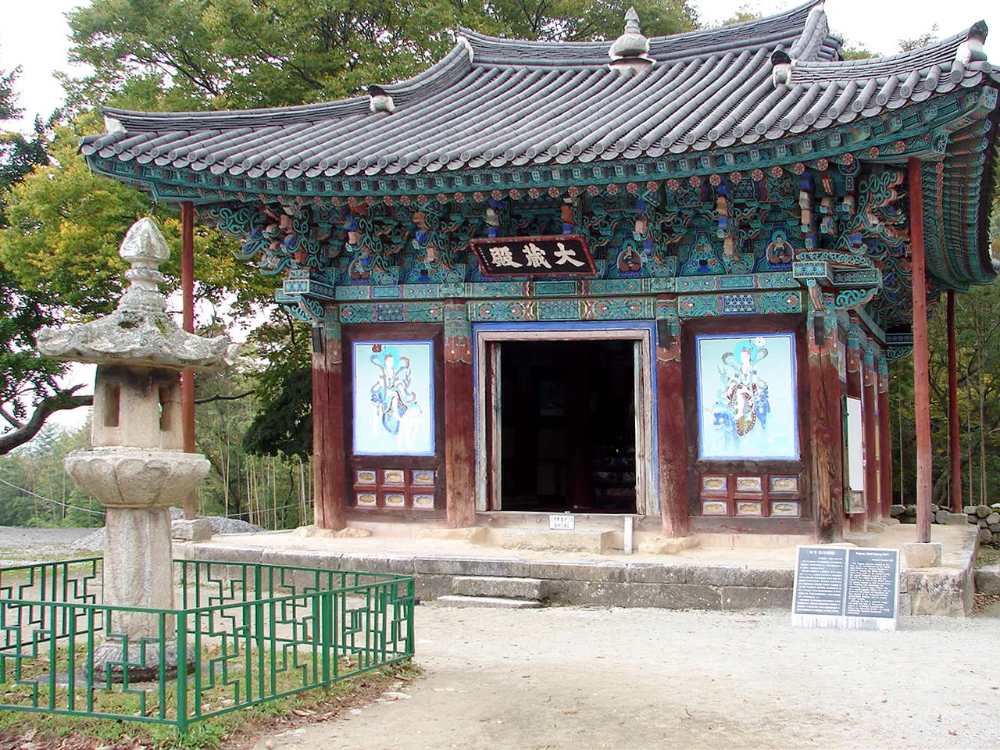
▲ 금산사 대장전. 앞쪽에 석등이 서 있다. 2007년 10월 26일 촬영(위키미디어 파일 정보). 사진=Steve46814(위키미디어 커먼즈, CC BY-SA 3.0)
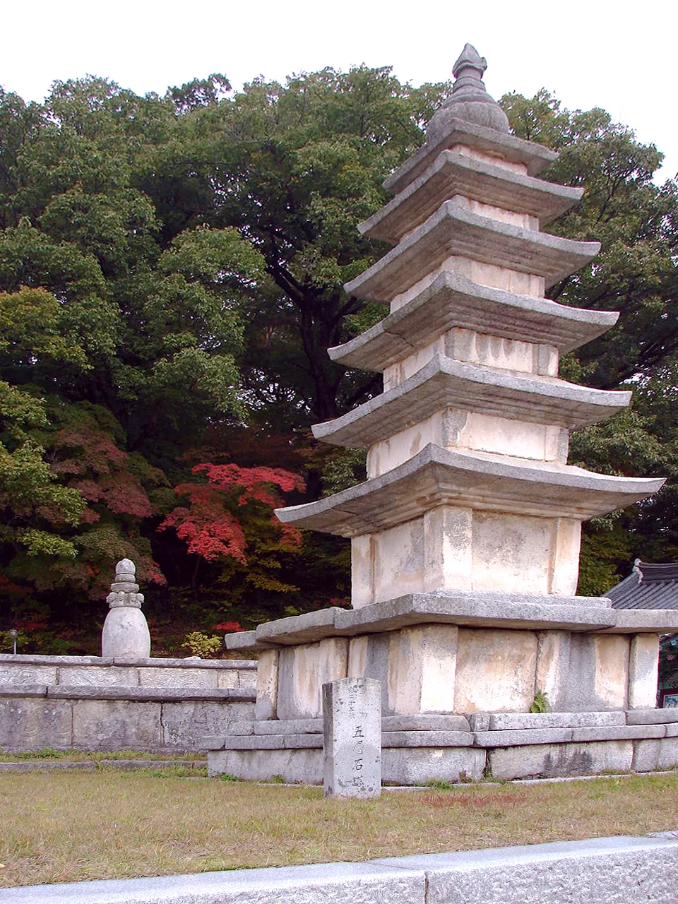
▲ 금산사 오층석탑. 2007년 10월 26일 촬영(위키미디어 파일 정보). 사진=Steve46814(위키미디어 커먼즈, CC BY-SA 3.0)
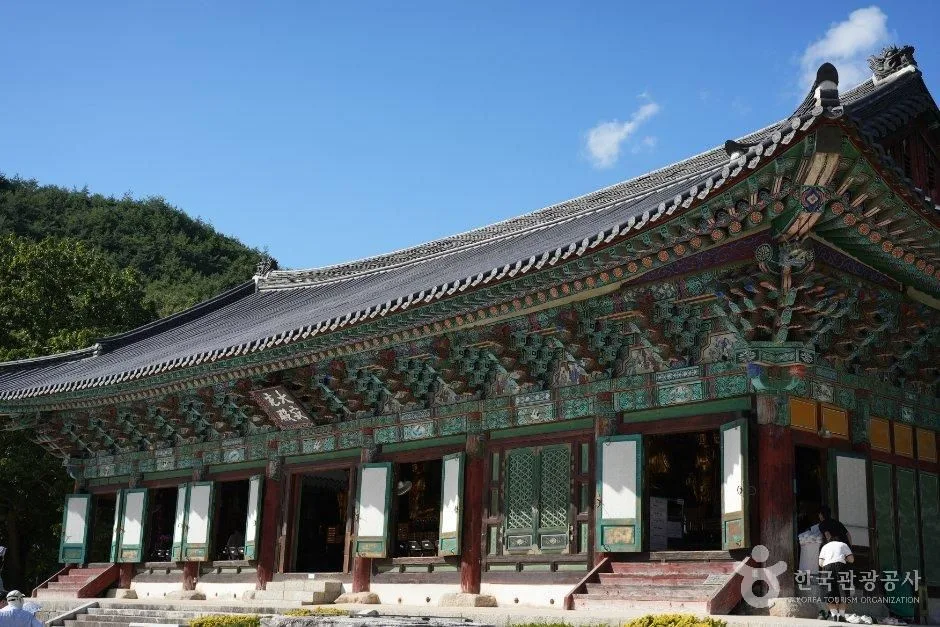
▲ 금산사 대적광전. 촬영 시기는 확인하지 못했다. 사진=한국관광공사
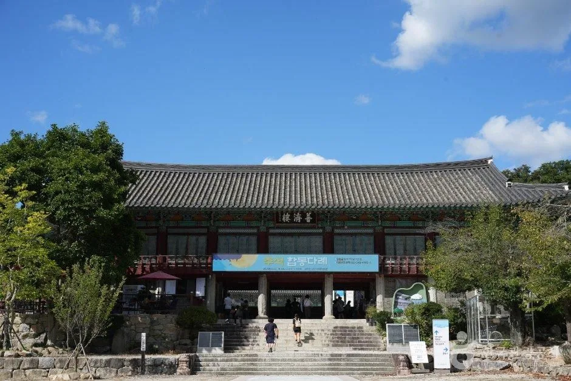
▲ 금산사 보제루 정면. 촬영 시기는 확인하지 못했다. 사진=한국관광공사
4. 10월 금산사 공지 — 확인된 행사만
금산사 누리집 공지사항(2026년 10월 2일 등록 글까지 확인)에는 추석 합동다례(9월 25일 10시, 대적광전), 개산대재 개최 안내(9월 22일 등록), 진표율사 점찰챌린지(10월 3일 토~4일 일, 오전 10시부터 부스 자율체험), 미륵전 천일기도 안내가 올라 있었다. 개산대재와 천일기도 공지는 이미지로 올라 있어 확대해 읽었다. 개산대재 '만등불사'는 10월 17일(토) 10시 대적광전 앞마당에서 열리고, 10:00 개산조 다례재, 11:00 개산 대법회, 13:00~15:00 모악산 금빛 가요제, 19:00~21:00 만등 점등으로 짜여 있으며 "개산대재 당일 차량운행"이라고 적혀 있다(운행 구간·방식은 확인하지 못했다). 행사 당일에는 경내와 주차장이 붐빌 수 있다. 미륵전 천일기도는 2026년 10월 6일(화) 입재, 2029년 7월 1일(일) 회향이다. 점찰챌린지는 이미 끝났다. 첫 화면 소식란에는 "[환성지안 스님 300주년 기념] 금산사 화엄산림"이 10월 24일(토)부터 매주 토요일 5회차, 10시부터 12시까지(법회 후 점심공양), 처영문화기념관에서 열리고 "주차비 무료"라고 적혀 있다. 이 행사는 참석자를 위한 안내로 보이며, 일반 방문객의 주차 요금 면제인지는 확인하지 못했다. 다만 "주차비 무료"를 따로 적은 점으로 보아 평소에는 주차요금이 있을 수 있다.
| 행사 | 일정 | 메모 |
|---|---|---|
| 개산대재 만등불사 | 10월 17일(토) 10:00 개산조 다례재, 11:00 개산 대법회, 13:00~15:00 모악산 금빛 가요제, 19:00~21:00 만등 점등 | 대적광전 앞마당, 당일 차량 운행, 문의 063-548-4440~1(공지 이미지 판독) |
| 화엄산림 | 10월 24일(토)부터 매주 토요일 5회차, 10:00~12:00 | 처영문화기념관, 법회 후 점심공양, 주차비 무료 표기 |
| 진표율사 점찰챌린지 | 10월 3일(토)~4일(일), 10시부터 | 종료 |
| 추석 합동다례 | 9월 25일 10시, 대적광전 | 종료 |
| 미륵전 천일기도 | 2026년 10월 6일(화) 입재, 2029년 7월 1일(일) 회향 | 기도 동참금 100만 원(공지 이미지), 문의 063-548-4440~1 |
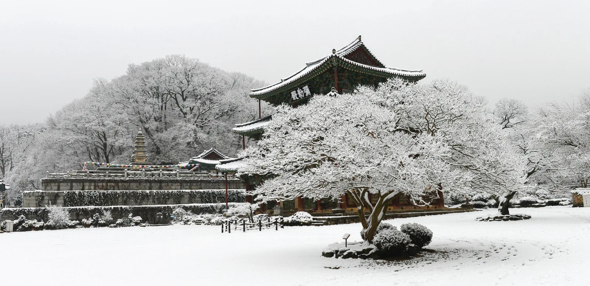
▲ 눈 덮인 겨울의 금산사 경내. 2013년 2월 28일 촬영으로 기록돼 있다(위키미디어 파일 정보). 사진=한국불교문화사업단(위키미디어 커먼즈 템플스테이 공식 계정 업로드, CC BY-SA 4.0)
5. 모악산도립공원 — 개방 정보와 탐방로
TourAPI 소개에 따르면 모악산은 전북 전주시·김제시·완주군에 걸쳐 있고 1971년 12월 2일 도립공원으로 지정됐다. 김제시 문화관광 누리집은 지정 시기를 1972년 12월로 적어 TourAPI·금산사 누리집(1971년 12월)과 다르다. 한국민족문화대백과는 '1971년 12월'(모악산 항목), '1971년 12월 2일'(모악산 도립공원 항목)로 적어 1971년 12월 2일이 맞는 것으로 보인다. 높이는 TourAPI 793.5m, 김제시 793m, 금산사 누리집 795.2m로 갈리는데, 한국민족문화대백과도 793.5m이므로 793.5m를 기준으로 삼고 793m는 반올림한 표기로 본다(795.2m는 근거를 찾지 못했다). 정상에 아기를 안은 어머니 모습의 큰 바위가 있어 모악(母岳)이라 불렸다는 설이 전한다. 개방 정보는 TourAPI에 3~10월 09:00~18:00, 11~2월 09:00~17:00, 매주 월요일·1월 1일 휴관으로 올라 있고 관리사무소는 063-290-2752다. 산 자체는 상시 열려 있는지, 이 시간이 시설 기준인지는 공식 안내에서 확인하지 못했다.
| 항목 | 내용 | 출처 |
|---|---|---|
| 위치 | 김제시 금산면 모악로 494(TourAPI 김제 쪽 주소). 완주 쪽 관리사무소는 완주군 모악산길 91 | TourAPI |
| 개방·휴무 | 3~10월 09:00~18:00, 11~2월 09:00~17:00, 월요일·1월 1일 휴관(적용 대상 확인 못 함) | TourAPI·김제시 |
| 높이 | 793.5m(TourAPI·한국민족문화대백과) / 793m(김제시) / 795.2m(금산사 누리집) | 793.5m를 기준으로 서술 |
| 사찰·유적 | 금산사, 대원사, 수왕사, 귀신사 등. 등록 사찰만 청룡사·심원암·학선암·용천암·보현사·천국사·용화사·쌍용사·월명암·도통사 등 | TourAPI·김제시 |
| 정상 통제 정보 | 완주군 모악산도립공원 페이지에 '실시간 통제정보 정상'이라는 표시가 있었다(확인일 기준) | 완주군 |
| 공원 내 공고 | '모악산도립공원 내 개인형 이동장치 출입제한 공고'(2026-06-25 게시). 제한 범위는 확인하지 못함 | 완주군 |
정상으로 오르는 코스는 완주군 문화관광 누리집에 5개가 안내돼 있다. 모두 완주 쪽(구이면 관리사무소·구이주차장) 들머리이거나 금산사로 내려오는 코스이며, 금산사에서 출발하는 정상 코스의 거리·시간은 김제시 누리집에서 확인하지 못했다.
| 코스 | 총거리·소요(공식 표기) | 경로 |
|---|---|---|
| 1코스 | 9.9km / 약 4시간 | 구이면 원기리 구이주차장 → 대원사 → 수왕사 육각정 → 정상 → 금산사 → 주차 |
| 2코스 | 8km / 약 3시간 30분 | 구이주차장 → 수왕사 → 정상 → 주능선 → 연분암 → 중인동 |
| 3코스 | 3.4km / 약 1시간 30분 | 관리사무소 → 대원사 → 수왕사 → 무제봉 → 정상 |
| 4코스 | 3.6km / 약 2시간 | 관리사무소 → 사랑바위다리 → 천일암 → 남봉 → 정상 |
| 5코스 | 5.5km / 약 2시간 50분 | 구이장파마을 → 590봉 → 신선바위 → 남봉 → 정상 |
김제시 문화관광 누리집의 '모악산 마실길'은 정상 등산이 아니라 걷기길 코스다. 2코스는 금산사주차장에서 출발해 백운동마을(2.8km), 귀신사(1.9km), 싸리재(1.4km), 금평저수지(5.8km)를 거쳐 금산사주차장(1.4km)으로 돌아오는 순환 코스다. 구간 표기를 더하면 13.3km지만 공식 총거리와 소요 시간은 적혀 있지 않다. 1코스는 유각재(전주 경계)에서 귀신사(1.3km), 싸리재(1.4km), 신아대숲길(3.7km), 서강사·남강정자(1.6km), 서릿골(3.3km), 금평저수지(5.0km), 금산사(3.3km), 배재(완주 경계, 1.7km)로 이어진다.
| 코스 | 경로와 구간 거리(공식 표기) |
|---|---|
| 1코스 유각재→배재 | 유각재 → 귀신사 1.3km → 싸리재 1.4km → 신아대숲길 3.7km → 서강사·남강정자 1.6km → 서릿골 3.3km → 금평저수지 5.0km → 금산사 3.3km → 배재 1.7km |
| 2코스 금산사주차장 순환 | 금산사주차장 → 백운동마을 2.8km → 귀신사 1.9km → 싸리재 1.4km → 금평저수지 5.8km → 금산사주차장 1.4km |
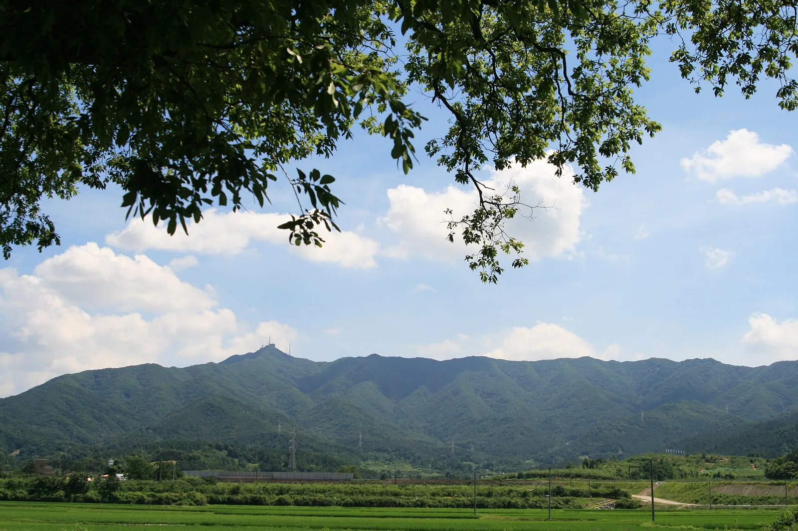
▲ 들판 너머로 본 모악산 원경. 2008년 7월 8일 촬영(위키미디어 파일 정보, 파일 설명은 '모악산의 여름 풍경'). 사진=Seong Ilhan(위키미디어 커먼즈, CC BY-SA 3.0)
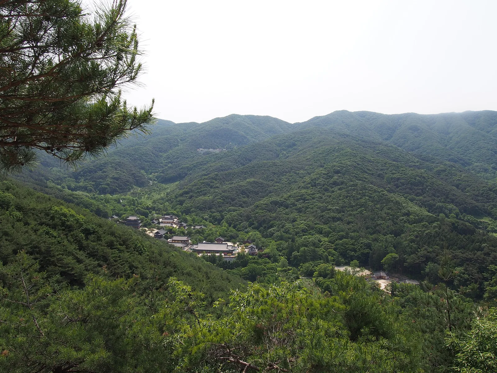
▲ 모악산 능선과 골짜기 풍경. 위키미디어 파일명에 '금산사'가 들어 있고 2017년 5월 28일 촬영으로 기록돼 있다. 사진=Nidhi Chakma(위키미디어 커먼즈, CC BY-SA 3.0)
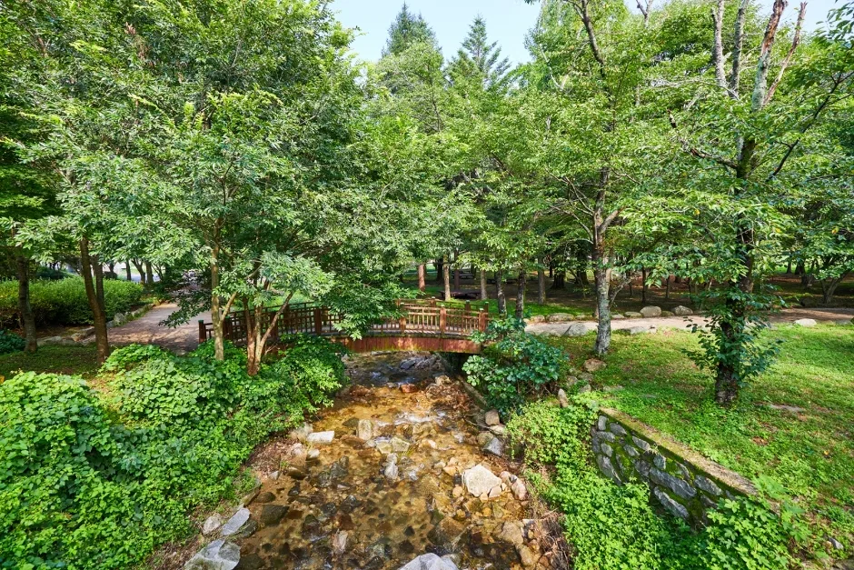
▲ 도립공원 안내 사진 속 숲 개울. 정확한 위치는 확인하지 못했다. 사진=한국관광공사
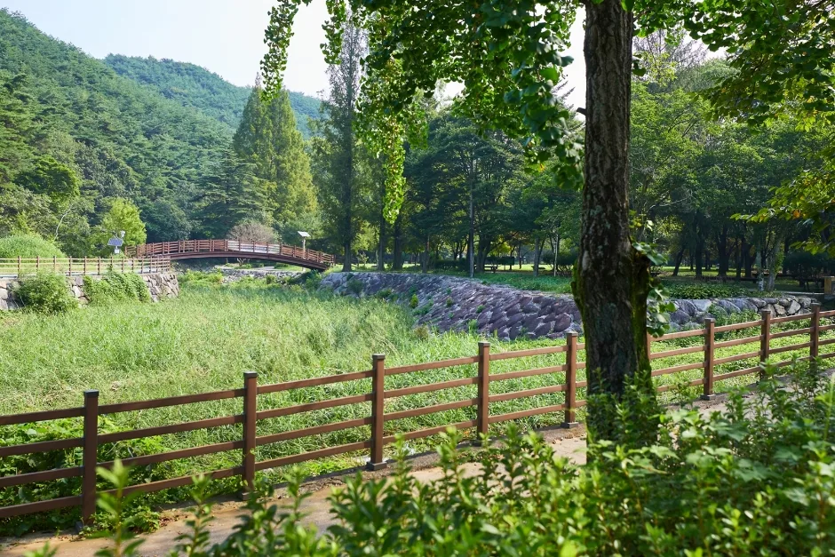
▲ 도립공원 안내 사진 속 나무다리와 잔디밭 일대. 정확한 위치는 확인하지 못했다. 사진=한국관광공사
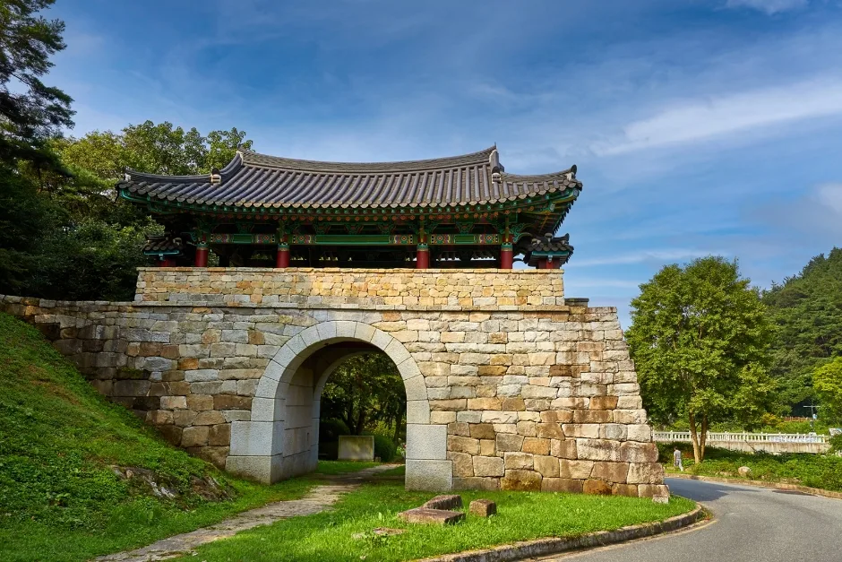
▲ 도립공원 안내 사진 속 석축 문루. 정확한 위치는 확인하지 못했다. 사진=한국관광공사
6. 단풍·산불철 입산통제 — 날짜를 쓰지 않은 이유
산림청이 2026년 9월 22일 발표한 단풍절정 예측지도(단풍나무류)에는 설악산 10월 20일부터 한라산 11월 6일까지 산이 표시돼 있고, 전북은 내장산·변산반도가 11월 4일이지만 모악산은 없다(카프리즘이 지도를 직접 열어 확인했다). 카프리즘이 다룬 산림청 2026 단풍 절정 예측 기사와 단풍 주말표의 산 목록에서도 모악산은 확인되지 않는다. TourAPI와 완주군 소개는 계절 경치를 말할 뿐 날짜가 없고, 완주군은 봄에는 벚꽃, 가을에는 감나무가 주렁주렁 열리는 풍경을 소개한다. 그래서 모악산·금산사의 단풍 절정 날짜는 쓰지 않는다.
입산통제도 마찬가지다. 완주군 모악산 안내에는 "사계절 개방 등산로(단, 동절기에는 안전관계로 입산통제)"라고만 적혀 있고 날짜는 없다. 가을철 산불조심기간은 원래 11월 1일~12월 15일이고, 2025년에는 산림청이 10월 20일~12월 15일로 앞당겼다(서부·북부지방산림청 보도자료). 2026년 기간은 보도마다 11월 1일~12월 15일과 11월 30일까지로 엇갈려 산림청 공고를 확인하지 못했다. 2026년에 같은 날짜가 적용될지는 알 수 없고, 모악산의 통제 구간도 확인하지 못했다. 산림청이나 김제시·완주군 공고를 먼저 확인하자. 날짜 구분은 입산통제 날짜 정리 기사에 자세히 정리해 두었다.
⚠️ 마실길이라도 통제 확인은 따로
마실길은 정상 코스가 아니라 걷기길 안내이지만, 산불조심기간 입산 제한은 산림 당국이 공고하는 별도 제도다. 완주군 모악산도립공원 페이지 상단의 "실시간 통제정보" 표시와 김제시 도시건설국(063-540-3335)·관리사무소(063-290-2752) 안내를 출발 전에 확인하자. 완주군 모악산도립공원 바로가기
7. 템플스테이 — 금산사 누리집 요금
금산사 템플스테이는 "나는 쉬고 싶다"라는 이름의 휴식형 프로그램이다. 금산사 누리집에는 아래 요금과 일정이 적혀 있다. 한편 김제시 문화관광 누리집에는 "체험형 6만 원, 자율휴식형 5만 원(1박 2일, 성인 기준)"과 다른 객실 구성이 적혀 있어 현행 값과 다르다. 이 글에서는 금산사 누리집 값을 따랐고, 최종 요금은 예약 전에 확인해야 한다.
| 구분 | 일정 | 성인 | 중·고생 | 초등생 | 유아 |
|---|---|---|---|---|---|
| 자율 휴식형 | 매일(예불·공양 자율) | 8만 원 | 7만 원 | 5만 원 | 2만 원 |
| 주말 체험형 | 매주 주말(108배·명상·포행·스님과 차담·탁본·LED 연등 만들기·예불 자율, 계절·사찰 일정에 따라 변경) | 10만 원 | 8만 원 | 6만 원 | 2만 원 |
| 당일형 | 화~일 전화 예약, 단체 15인 이상 | 20,000원부터(체험에 따라 상이) | - | - | - |
숙소는 2인실 16실, 3~4인실 5실이고 화장실(비데)·샤워부스·에어컨·온수기가 숙소마다 있다고 안내한다. 연 4회 열리는 "내비둬 콘서트"는 사전 공지로 운영된다. 문의는 063-542-0048, 010-8690-3308이다. 가을 예약이 얼마나 치열한지는 템플스테이 예약 경쟁 기사를 참고하자. 금산사 템플스테이 바로가기
8. 가는 길 — 금산사 누리집 안내 그대로
금산사 누리집 '오시는길'에는 자가용 경로와 버스가 아래처럼 안내돼 있다. 거리·소요는 누리집 표기를 그대로 옮긴 값이다.
| 구분 | 안내 내용 |
|---|---|
| 자가용(호남고속도로) | 금산사IC 진출 → 원평 → 금산사(약 5km, 10분). 김제시 페이지는 금산사IC에서 4km·5분으로 표기 |
| 자가용(서해안고속도로) | 서김제IC 진출 → 김제 → 원평 → 금산사(약 26km, 50분) |
| 자가용(순천완주고속도로) | 상관IC 진출 → 신리교차로 → 호남로(논산군산우회도로) → 중인리교차로 → 금산사(약 23km, 40분) |
| 버스(전주) | 전주역·전주고속터미널에서 금산사행 79번. 전주역 승강장 탑승 약 1시간, 고속터미널 밖 승강장 탑승 45분 |
| 버스(김제) | 김제역·김제버스터미널에서 금산사행 5번. 김제역 파출소 맞은편 승강장 40분, 터미널 맞은편 금석마트 앞 승강장 50분 |
9. 같은 권역 기사와 이 글의 차이
모악산·금산사는 김제와 완주가 맞닿은 곳이다. 이 글은 금산사 개방·템플스테이·모악산 탐방로 같은 방문 실무에 집중했다. 벽골제에서 열린 지평선축제의 시간표와 주차는 김제지평선축제 벽골제 자차 가이드에, 차가 들어갈 수 없는 완주 화암사 계곡 철계단 이야기는 완주 화암사 기사에 있다. 금산사 템플스테이 안내에는 주변 관광지로 김제 벽골제, 전주 한옥마을, 진안 마이산, 임실 붕어섬, 부안 채석강이 나온다. 전주 쪽 주차는 전주한옥마을 무료주차장 기사를 참고하자.
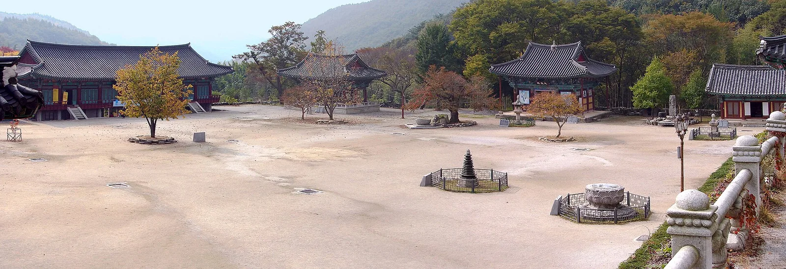
▲ 금산사 경내 마당 일대 파노라마. 2007년 10월 26일 촬영(위키미디어 파일 정보). 사진=Steve46814(위키미디어 커먼즈, CC BY-SA 3.0)
10. 출발 전 주의 — 월요일·통제·주정차
- 월요일: TourAPI의 금산사는 연중무휴지만 모악산도립공원(TourAPI)은 월요일 휴관으로 올라 있다. 김제시 금산사 페이지의 월요일 휴관 표기는 다른 시설 양식의 표여서 금산사 기준으로 보기 어렵다. 월요일(10월 12일·19일·26일) 방문은 전화로 먼저 확인하자.
- 개산대재 당일(10월 17일): 10시 대적광전 앞마당 행사, 저녁 만등 점등까지 이어져 붐빌 수 있다. 당일 차량 운행이 있다고 공지돼 있으나 상세는 확인하지 못했다.
- 입산통제: 2026년 가을철 산불조심기간 시작일은 공고를 확인하지 못했다. 입산통제 날짜 정리 기사로 구분하고 공고를 확인하자.
- 도로변 주정차: 단풍철 갓길 주정차는 단속 대상이 될 수 있다. 단풍철 갓길 주정차 기사를 참고하자.
- 폐장 시각: TourAPI 기준 금산사는 하절기 19:00, 동절기 18:00까지다. 11월부터 해가 짧아지므로 시간 전환일을 금산사에 확인하자.
- 문의 모음: 금산사 063-548-4442, 모악산도립공원 관리사무소 063-290-2752, 김제시 문화관광과 063-540-3495, 관광문의 1330
11. 같이 보면 좋은 카프리즘 기사
✅ 출발 전 체크리스트
· 금산사 하절기 06:00~19:00·동절기 06:00~18:00, 연중무휴(TourAPI). 입장료는 무료(문화유산 관람료 면제), 주차요금은 금산사 063-548-4442 확인
· 도립공원은 월요일 휴관 표기가 있으니 월요일 방문 전 관리사무소 063-290-2752 확인
· 템플스테이 자율 휴식형 성인 8만 원, 주말 체험형 10만 원(금산사 누리집)
· 2026년 입산통제 시작일은 공고 확인 전까지 가정하지 않기
· 개산대재는 10월 17일(토) 10시, 화엄산림은 10월 24일부터 매주 토요일 10~12시
12. 정리
금산사는 TourAPI 기준 하절기 06:00~19:00, 동절기 06:00~18:00에 연중무휴로 안내되고, 입장료(문화유산 관람료)는 2023년 5월부터 면제다. 주차요금은 공식 자료에서 확인하지 못했다. 템플스테이는 금산사 누리집 기준 자율 휴식형 성인 8만 원, 주말 체험형 10만 원이다.
모악산 정상 코스는 완주군 안내 3.4~9.9km·1시간 30분~약 4시간, 김제시 마실길 2코스는 구간 표기 합 13.3km다. 10월 17일 개산대재와 24일부터의 화엄산림도 확인된 일정이다. 단풍 절정 날짜와 2026년 입산통제 시작일은 공식 자료가 없어 쓰지 않았다.